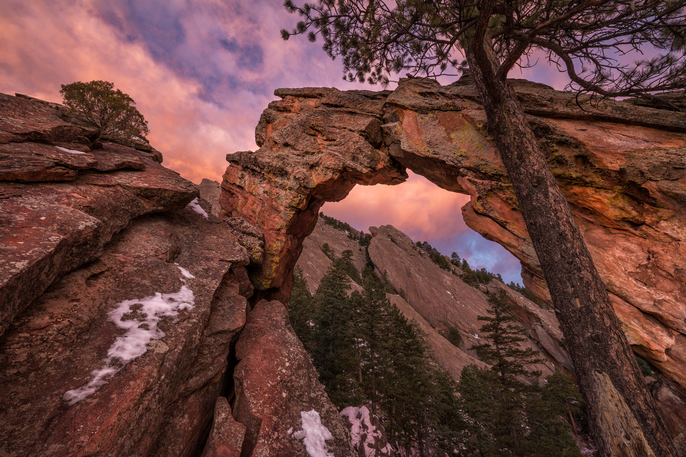
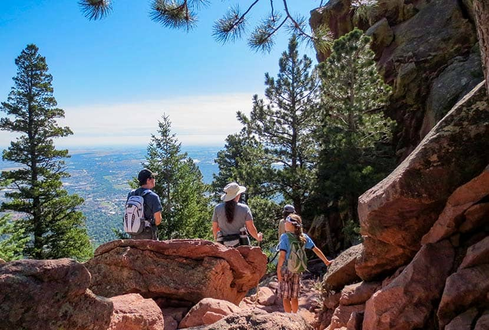
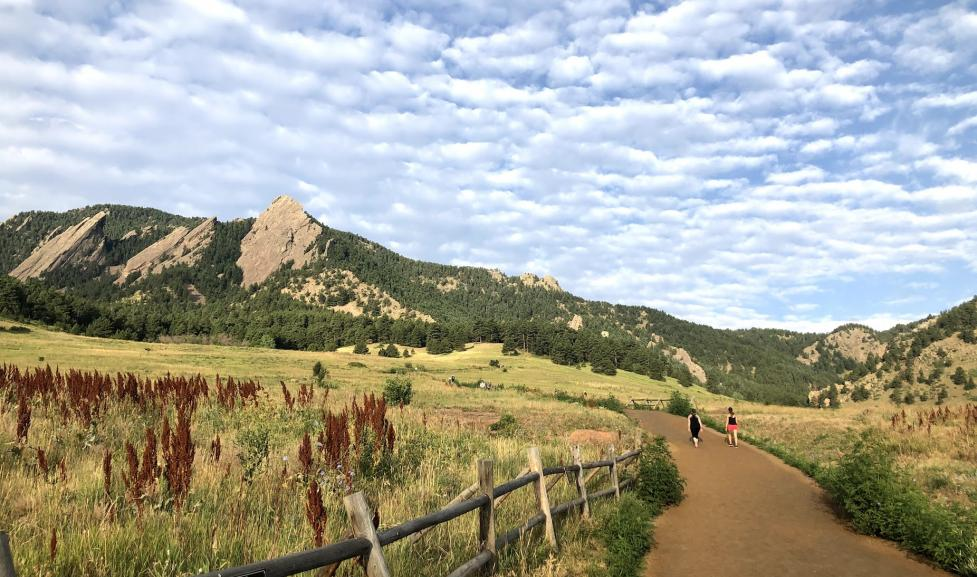

Royal Arch Trail
Discover this 3.4-mile out-and-back trail near Boulder, Colorado. Generally considered a challenging route. This is a very popular area for hiking, snowshoeing, and running, so you'll likely encounter other people while exploring. The best times to visit this trail are March through October. Dogs are welcome and may be off-leash in some areas
First and Second Flatirons Loop
Check out this 2.7-mile loop trail near Boulder, Colorado. Generally considered a challenging route. This is a very popular area for hiking, rock climbing, and snowshoeing, so you'll likely encounter other people while exploring. The best times to visit this trail are April through October. Dogs are welcome and may be off-leash in some areas.
Chautauqua Trail Loop
Try this 1.6-mile loop trail near Boulder, Colorado. Generally considered a moderately challenging route, it takes an average of 56 min to complete. This is a very popular area for hiking, running, and walking, so you'll likely encounter other people while exploring. Dogs are welcome, but must be on a leash.
Find Other Great Trails
Here are some links that will gide you other great trails in Boudler